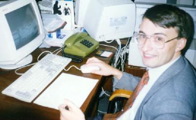
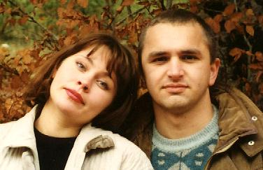
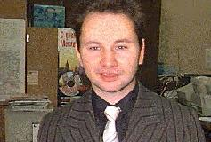
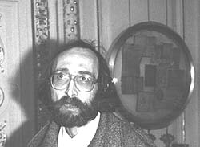
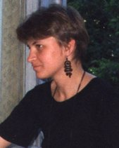

Проект создания сайта был задуман и
осуществлен на подвижнических началах группой лиц,
являющихся приверженцами научного наследия Л. Н.
Гумилёва при активном участии общественной
организации "Фонда Л.Н.
Гумилева" .
Основатели

Родионов
Александр
Родился в 1967 году
в Алма-Ате, курортном
городе на юге бывшего СССР.
По профессии - экономист,
окончил местный институт
народного хозяйства в 1990
г., на момент основания сайта занимался фондовым
рынком Республики
Казахстан , а ныне
консультирую по проблемам
ведения электронного
бизнеса.
Первой книгой Л. Н.
Гумилёва, прочитанная мною
была "Древняя Русь и Великая
степь" , первую
часть которой я и сейчас считаю
лучшим из написанных в XX веке
исторических обзоров Западной
Евразии в первом тысячелетии
нашей эры.
Считая, что на Сети
должны быть работы Л. Н.
Гумилёва, я большее года искал
их, но к моему большому
изумлению их не находил. Но
поисков я не оставлял, пока Максим
Мошков не
подсказал, что быстрее всего
создать самому такой сайт.
Благо под рукой были приличные
компьютеры, программное
обеспечение, сканер и я
располагал свободным временем.
По счастью нашлась и небольшая
сумма денег, поскольку книги
ученого за пределами России
крайне редки и очень дороги.
Затем к хорошому делу
подтянулись сподвижники из
зарубежья и дело пошло.

Мироновы
Александр и
Татьяна
Зовут меня Александр
Миронов (мл.)., родился
21 апреля 1971 г., профессию -
клеточный биолог, научная
степень - кандидат
медицинских наук, место
работы - Италия, позже Нидерланды.
После этого в моей
жизни ненадолго взяли верх
нефтяные династические
традиции. И я вместе с женой
(москвичкой) переехал в
Волгоград. В первые дни
самостоятельной трудовой
деятельности, прислушиваясь к
разговорам в курилке старших
товарищей, я с ужасом осознал,
что не имею ни малейшего
представления о теории
этногенеза Л. Гумилева. Мне в
срочном порядке пришлось
прочитать первую попавшуюся
книгу Л. Гумилева "Этногенез
и биосфера Земли" . Сила
вещей вновь переселила меня в
первопрестольную.
Шло время, с
нефтяниками я распрощался, и
стал заниматься изначально
гиблым делом: внедрением в
Славном городе платежной
системы на базе пластиковых
карт "Волга". Затем оставил и это
поприще и вновь вернулся в столицу на
"тучные" хлеба Интернета. Все
найденные книги Л. Гумилева
позволяли мне разговаривать о
вопросах истории на более
подготовленном уровне, но это
радовало мало. Но вот однажды
зайдя на домашнюю страничку Ланцова
Олега , я
обнаружил среди ссылок
знакомую фамилию. Сразу решил
подключиться к этой работе. И
вскоре Создатели сайта решили
включить меня в свою компанию.
За что им большое спасибо.
Создатели

Левченко
Дмитрий
Закончил
Московский авто-дорожный
инстутут. В настоящее
время работает старшим
преподавателем на кафедре
"Транспортные
установки". В читаемом с
1995 г. курсе "Экология и
безопасность
спец.техники"
рассказывает о теории
этногенеза, в плане
воздействия этноса на
биосферу.
Эдуард
Эдуардович Фрёлих
Всю жизнь до 1995
года прожил в
Ленинграде. В 1980 г.
закончил физфак ЛГУ по
специальности матфизика.
До 1990 года работал во
ВНИИ-НПО Электрон снс-ом. С
1994 - профессионально
занимаюсь
программированием, а с 1995
работаю в США. Из сильных
увлечений - история
(Гумилев попутал еще в 1981
году) и литература.
фото одесского
фотохудожника Георгия
Исаева
Кордонский
Михаил Борисович
Родился в 1951 г. и
большую часть жизни прожил
в Одессе.
По образованию
инженер связи. По нынешней
профессии верстальщик и
WEB-мастер (не дизайнер).
Работаю техническим
редактором небольшой
газетки, еще несколько
местных изданий верстаю в
HTML для Интернета.
По хобби - педагог,
журналист, дилетант-социолог
(не путать с однофамильцем,
известным настоящим
социологом Симоном К.). Все эти
увлечения реализую
практически, то есть: обучаю
детей компьютерам и Сетям,
публикуюсь в местной печати,
пишу и издаю полусамиздатские
тексты по неформальной
социотехнике. Последнее,
очевидно, и привело к увлечению
трудами Гумилева - с 1979 года,
ксерокопия "Этногенеза"
из ВНИИТИ. Еще я изготавливал и
распространял самиздатские
брошюры с популярными статьями
Л.Н. Теперь вот в меру сил
помогаю в корректуре сайта.
Издания в Сети: http://lib.ru/INDEXLESS , http://www.paco.net/~indexless , http://www.paco.net/~indexless/smile и http://www.paco.net/~indexless/tg .

Мороженко
Оксана
Закончила
Киевский государственный
университет, факультет
кибернетики. Специалист по
сопровождению ПО из г.
Киева.
Кроме этого, мы
приносим огромную
благодарность Андрею
Шлепову (г. Москва) ,
который не смотря на
недостаток своего времени осуществлял корректировку
текстов книги "Поиски
вымышленного царства".
Мы приглашает всех
заинтересованных лиц к
сотрудничеству с
нами
в
деле развития сайта - первого
полноценного сайта по этнологии в России.